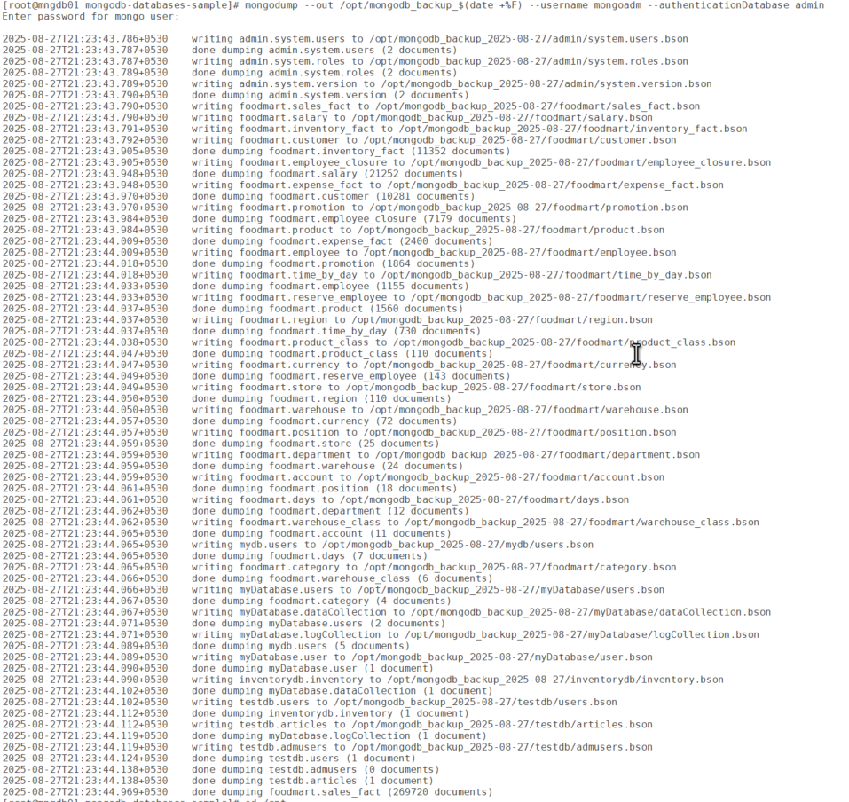
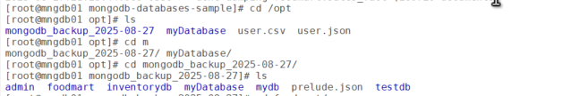
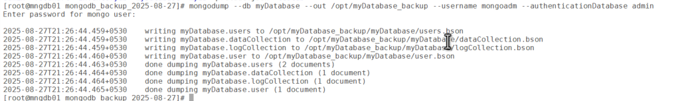
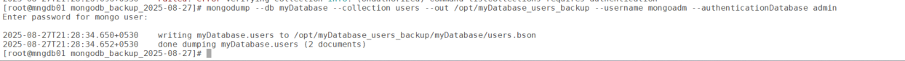
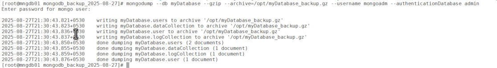
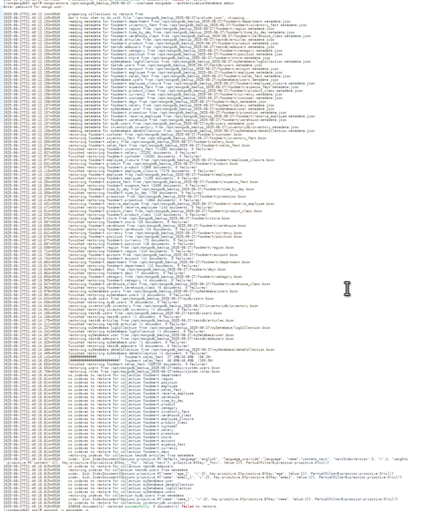
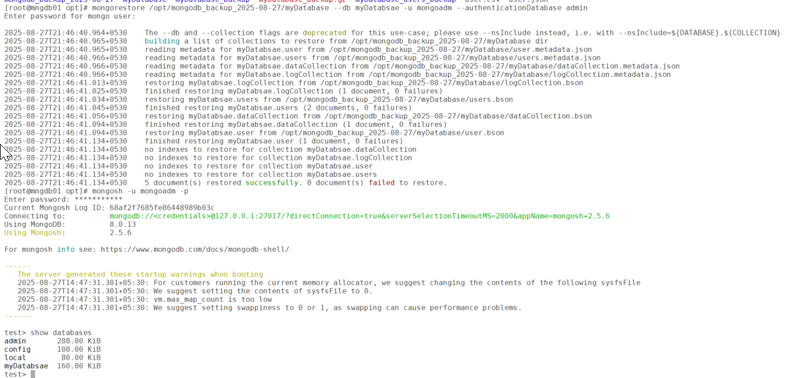

Database Backup and Restore Using mongodump and mongorestore in MongoDB
- Database
- MongoDB
Backing up and restoring a MongoDB database is a critical task for ensuring data
integrity and availability, whether for disaster recovery, migrations, or testing. MongoDB
provides two powerful command-line utilities, mongodump and
mongorestore, for logical backups and restores. These tools export and import
data in BSON format, preserving the database’s structure, including collections, indexes,
and metadata. In this blog post, we’ll walk through how to use them, explore their use
cases, provide step-by-step examples, and highlight best practices and limitations to help
you manage your MongoDB backups effectively.
What are mongodump and mongorestore?
- mongodump: A utility that creates a binary export of MongoDB data in BSON format, capturing entire databases, specific collections, or filtered data. It’s ideal for logical backups and supports point-in-time recovery for replica sets.
- mongorestore: A utility that restores BSON data created by
mongodumpinto a MongoDB instance, recreating databases, collections, and indexes.
These tools are part of the MongoDB Database Tools package and are well-suited for small to medium-sized deployments, migrations, and disaster recovery.
Step-by-step guide to using mongodump and mongorestore
Prerequisites
- MongoDB installation: Ensure MongoDB and the Database Tools package are installed. Download from MongoDB’s official site if needed.
- Access permissions: Have
findprivileges formongodump(e.g. thebackuprole) andinsert,createCollectionprivileges formongorestore(e.g. therestorerole). - MongoDB instance: A running MongoDB instance (local or remote) with sample data for testing.
- Disk space: Ensure sufficient disk space for backup files, especially for large databases.
Steps for mongodump
Back up all databases
mongodump --out /backup/mongodb_backup_$(date +%F)

Back up a specific database
mongodump --db myDatabase --out /opt/myDatabase_backup --username mongoadm --authenticationDatabase admin
Back up a specific collection
mongodump --db myDatabase --collection users --out /opt/myDatabase_users_backup --username mongoadm --authenticationDatabase admin
Back up with compression
mongodump --db myDatabase --gzip --archive=/opt/myDatabase_backup.gz --username mongoadm --authenticationDatabase admin
Steps for mongorestore
Restore all databases
mongorestore /opt/mongodb_backup_2025-08-27 --username mongoadm --authenticationDatabase admin
Restore a specific database
mongorestore /opt/mongodb_backup_2025-08-27/myDatabase --db myDatabsae -u mongoadm --authenticationDatabase admin
Restore a specific collection
mongorestore --db mydb --collection users /backup/users_backup/mydb/users.bson -u mongoadm --authenticationDatabase adminRestore with drop
mongorestore --db mydb --drop /backup/mydb_backup/mydb -u mongoadm --authenticationDatabase adminDrops the existing mydb database before restoring, to avoid duplicates.
Restore from a compressed archive
mongorestore --gzip --archive=/backup/mydb_backup.gz -u mongoadm --authenticationDatabase adminRestores from a compressed .gz archive.
Restore with no index creation
mongorestore --noIndexRestore --db mydb /backup/mydb_backup/mydb -u mongoadm --authenticationDatabase adminSkips index creation, useful for manual index management or performance optimization.
Common options
--out,--archive: Specify the output directory or archive file formongodump.--gzip: Enable compression for backups and restores.--oplog,--oplogReplay: Enable point-in-time recovery for replica sets.--drop: Drop target collections/databases before restoring.--host,--port,--uri: Connect to local or remote MongoDB instances.--ssl: Use SSL/TLS for secure connections.--nsInclude,--nsExclude: Filter namespaces (databases and collections) for backup/restore.
Use cases for mongodump and mongorestore
- Disaster recovery:
- Create regular backups of critical databases to recover from data loss due to hardware failures, human errors, or corruption.
- Example: back up a production database nightly and restore it to a new instance after a crash.
- Database migration:
- Move databases between servers, environments (e.g. dev to prod), or MongoDB versions.
- Example: migrate
mydbfrom an on-premises server to a cloud-hosted MongoDB instance.
- Testing and development:
- Create snapshots of production data for testing or development environments.
- Example: restore a production backup to a staging server for QA testing.
- Point-in-time recovery:
- Restore replica sets to a specific point in time using oplog entries, minimizing data loss.
- Example: recover a database to its state before an accidental data deletion.
- Archiving:
- Archive historical data in BSON format for compliance or auditing purposes.
- Example: back up a
transactionscollection for regulatory retention.
Limitations of mongodump and mongorestore
- Performance impact on large deployments:
- Issue:
mongodumpcan strain resources on runningmongodinstances, especially for large datasets. - Impact: May cause slowdowns in production environments.
- Workaround: Run backups during low-traffic periods, or use tools like MongoDB Atlas for managed backups.
- Issue:
- No atomicity for sharded clusters with transactions:
- Issue: For MongoDB 4.2+ sharded clusters with in-progress
transactions,
mongodumpcannot guarantee atomicity. - Impact: Inconsistent backups for distributed systems.
- Alternative: Use MongoDB Atlas, Cloud Manager, or Percona Backup for MongoDB for sharded clusters.
- Issue: For MongoDB 4.2+ sharded clusters with in-progress
transactions,
- Excludes the
localdatabase:- Issue:
mongodumpskips thelocaldatabase (containing the oplog for replica sets) unless explicitly included. - Impact: Manual inclusion of the oplog via
--oplogis required for point-in-time recovery. - Workaround: Always use
--oplogfor replica set backups.
- Issue:
- Manual handling of users and roles:
- Issue:
mongodumpdoesn’t back up user/role configurations in theadmindatabase by default. - Impact: Authentication settings must be recreated or explicitly backed up.
- Workaround: Include
--db admininmongodumpto capture user data.
- Issue:
- Resource requirements:
- Issue: Backups require significant disk space and memory,
especially without
--gzip. - Impact: Large databases may strain storage systems.
- Workaround: Use
--gzipor--archivefor compression.
- Issue: Backups require significant disk space and memory,
especially without
- No incremental backups:
- Issue:
mongodumpcreates full backups each time, unlike incremental backup solutions. - Impact: Increased storage and time for frequent backups.
- Alternative: Use MongoDB Atlas or Percona Backup for incremental options.
- Issue:
Best practices for mongodump and mongorestore
- Automate backups: Use cron jobs or automation tools to schedule
regular
mongodumpruns:
Example: runs daily at 2 AM.0 2 * * * mongodump --db mydb --gzip --archive=/backup/mydb_$(date +%F).gz - Enable compression: Use
--gzipor--archiveto reduce backup file sizes and save storage. - Use point-in-time recovery: Always include
--oplogfor replica set backups and--oplogReplayfor restores to ensure consistency. - Test restores: Periodically restore backups to a sandbox environment to verify integrity and practise recovery procedures.
- Secure backups: Use
--sslfor secure connections and encrypt backup files (e.g. with AES-256) for sensitive data. Store backups in secure, off-site locations (e.g. AWS S3, Google Cloud Storage). - Monitor and validate: Monitor backup processes for errors and
validate restored data using MongoDB shell queries:
db.users.countDocuments() db.users.getIndexes()
Conclusion
mongodump and mongorestore are robust tools for logical backups
and restores in MongoDB, offering flexibility for disaster recovery, migrations, and testing.
Their ability to preserve data types, indexes, and oplogs (for replica sets) makes them more
comprehensive than mongoexport/mongoimport. However, limitations
like performance impacts on large deployments and lack of atomicity for sharded clusters mean
they’re best suited for small to medium-sized setups. For enterprise-grade or sharded
environments, consider MongoDB Atlas, Ops Manager, or Percona Backup for MongoDB.